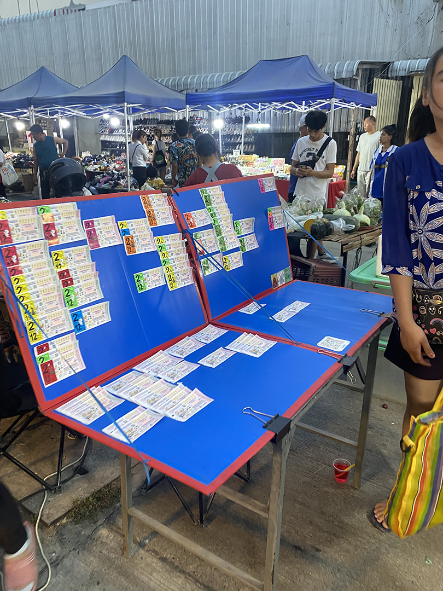
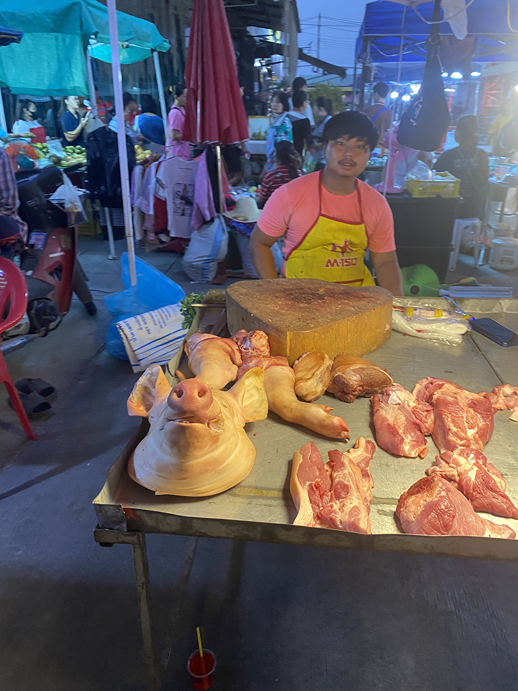
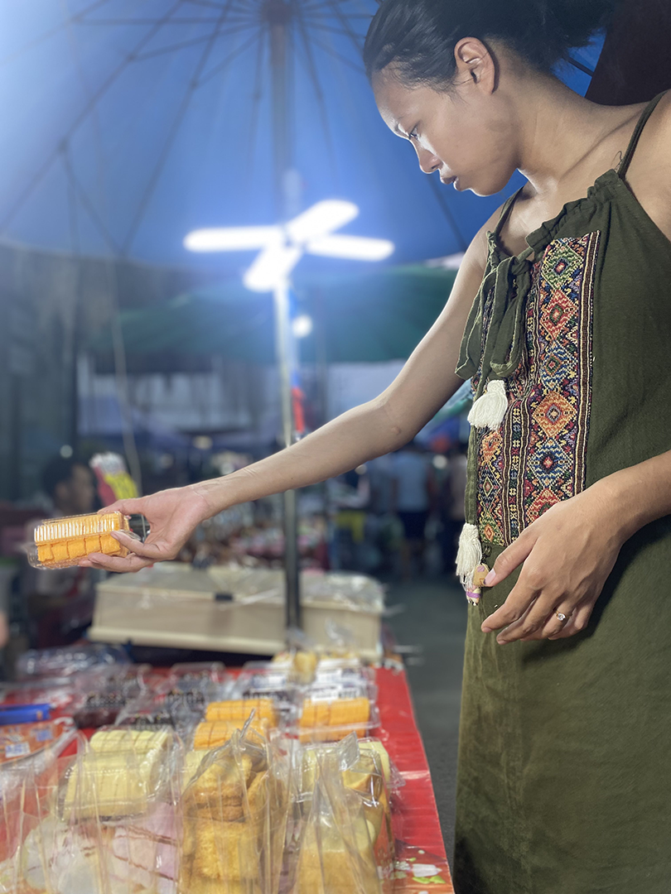

Chotana Night Market Review
Night markets are a quintessential part of Thai culture. In every city, town, or village you can find a night market open pretty much any day of the week. They vary in size and content.
For example, there is a higher end Japanese night market located in Bangsean, Chonburi, Thailand. This one has the quality of food you would find at a ritzy farmers market in California, and it's more on the expensive end as far as Thai night markets go.
Then there is the Chotana Night Market, which is a more humble down to earth market without kobe beef or fine wines, but instead with pad thai and watermelon smoothies for an average price.
Background Info

The Chotana Night Market is located near my old house on the outskirts of Chiang Mai, on Chotana Rd Soi 22 behind the 7-11. It is placed inside of the Thai equivalent of a strip mall, though more cozy and friendly than your average American strip mall. It’s about a 10-15 minute drive north of the Old City.
It occurs every Wednesday evening, from 5pm-9pm. There are countless markets just like this in every town and city all over Thailand. It is your standard Thai night market.
The reason I want to tell you about this one specifically is that tourists may not get the opportunity to experience this kind of a night market. If you are a tourist and traveling to Chiang Mai, the only night markets you will go to most likely will be the ones in the center of town, the ones that are geared towards farang (the term Thais use to refer to foreigners, specifically foreigners of European descent).
If you want to go to an authentic local night market, then this is worth a visit.
What Can You Buy?

Upon arriving you’ll likely see vendors selling clothing (shirts, shoes, belts, dresses, watches, etc.) and other products (perfume, phone accessories, etc.). All of these goods are extremely affordable, more so than the already affordable goods at the touristy night markets. For example, I bought three average shirts for 100 baht, which is a little less than 3 dollars.
Though, a word of advice: beware of buying any kind of electronics, like airpods or chargers. I’ve bought 500 baht knock off Airpods at another market like this before and they stopped working the next day. The electronics can be knock offs or used, so it’s a gamble whether or not they’ll actually work.
In addition, you can also find lottery tickets for sale, which is something you won’t really see in most Western markets, and was certainly a shock for me when I first laid eyes on it.
Further in the market is where you will find the food and drinks. You can find pretty much everything you could want here: from pad thai, to chicken feet, to Thai tea, etc.
On our recent trip here, my wife picked up some khanom (“dessert” in Thai language). This khanom was an orange swiss roll, a very common pastry you’ll see in bakeries and markets here. Thai desserts don’t traditionally have any kind of bread in it, but nowadays ever since Thailand began opening up to the West, pastries and cakes have been becoming more common and available at every night market.
This market, like nearly every other, still includes traditional khanom, which are typically made from vegetables and fruit and are free from a lot of the preservatives and processed ingredients Western desserts include. If you had to try one traditional Thai dessert, I would try khanom sot sai. It is basically a coconut jello filled with caramelized sugar and coconut shavings, wrapped in a banana leaf. Be sure you get the right one though, there are many dishes wrapped in banana leaves, so make sure before you purchase it you make sure it is indeed khanom sot sai.
Walking through, you’ll see a variety of fruits and vegetables for sale: coconuts, jackfruit, corn, durian etc. The corn on the cob is one of my favorites to purchase. I got mine fresh off the grill and slathered in butter. Corn is a common feature at Thai night markets. Other than grilled corn on the cobs, it’s also sold as kernels in a bowl with a variety of toppings, like cheese, bacon, sour cream, etc.
In addition, you can also find many kinds of main dishes. These include ones that Westerners are more familiar with like pad see ew, and if you don’t know what it is it's a stir fried noodle dish soaked in soy sauce and oyster sauce, typically mixed together with chicken or pork and Chinese broccoli. The main dish you’ll find that you are most likely not familiar with is yam moo, which translates to “pork salad”. It’s a mix of grilled pork, onions, mint leaves, fish sauce, sugar, and chili flakes. It’s one of my favorites, and a dish I always recommend to people.
If you are sensitive to spicy food, be sure to tell the cook, “Mai ped.” This will most likely ensure that your meal will not be spicy. But it’s not a guarantee, because many Thais can’t conceive of cooking without chillies, so sometimes when you say “mai ped” (not spicy) they will use half a chili instead of four chillies. We decided on a simple main dish: mama noodles, the Thai equivalent of Top Ramen, though prepared in a more artisan way: cooked in a wok, with spices, vegetables, and meat thrown in.
There are also some unique finds at the Chotana Night Market, which you won’t encounter at the more touristy night markets around Thailand.
One of the more unique finds at the market includes the catfish, which are freshly caught in the Ping River, which is less than a kilometer from this night market. The fisherman who sells them simply places them in a wheelbarrow filled with water and writes 60 bhat ( $1.82) on a sign. At this night market, as well as many other local markets, they will sell a whole barbecued catfish on a stick. I would recommend trying this, because it is simple yet delicious, and not spicy.
Then there is the pig, which is not sold as neatly cut pork chops, but as whole body parts (pig head is a steal here!). The reason you have fresh meat at this night market is because it is geared toward locals who want fresh meat for their restaurant or for cooking at home.
As for the drinks, you can find the usual milk teas and fruit smoothies. This time we decided to get some Italian soda. If you don’t know what Italian soda is, it is essentially DIY soda. First, the seller fills a cup with carbonated water that comes from what looks to be a beer tap, and then they add flavored syrup to it. My wife decided to order blueberry flavor, but after trying it we both agreed it was too sweet.
This is a common occurrence in Thailand because Thais have an affinity for intense flavor, whether it be spicy or sweet. You notice this when you order a dish that you don’t expect to be spicy and it ends up being painfully spicy or sometimes when you order a hamburger and it comes out absolutely bathed in incredibly sweet ketchup.
This is not all the time of course, but you will notice it the longer you are in Thailand. Really, the best remedy for this is to try as many food places as possible until you find the one that makes it just the way you like it. This is not hard to do, because there is a ridiculous amount of food available from the busiest downtown street to the tiniest alley in the outskirts of the city.
Final Note
So, if you are in Chiang Mai, but want to get a taste of the “real Thailand”, you can take the 15 minute ride to the Chotana night market and experience what it has to offer. This market is perfect for those looking to escape the touristy night markets and experience an authentic Thai atmosphere. It's a great spot to enjoy the local culture and offerings.